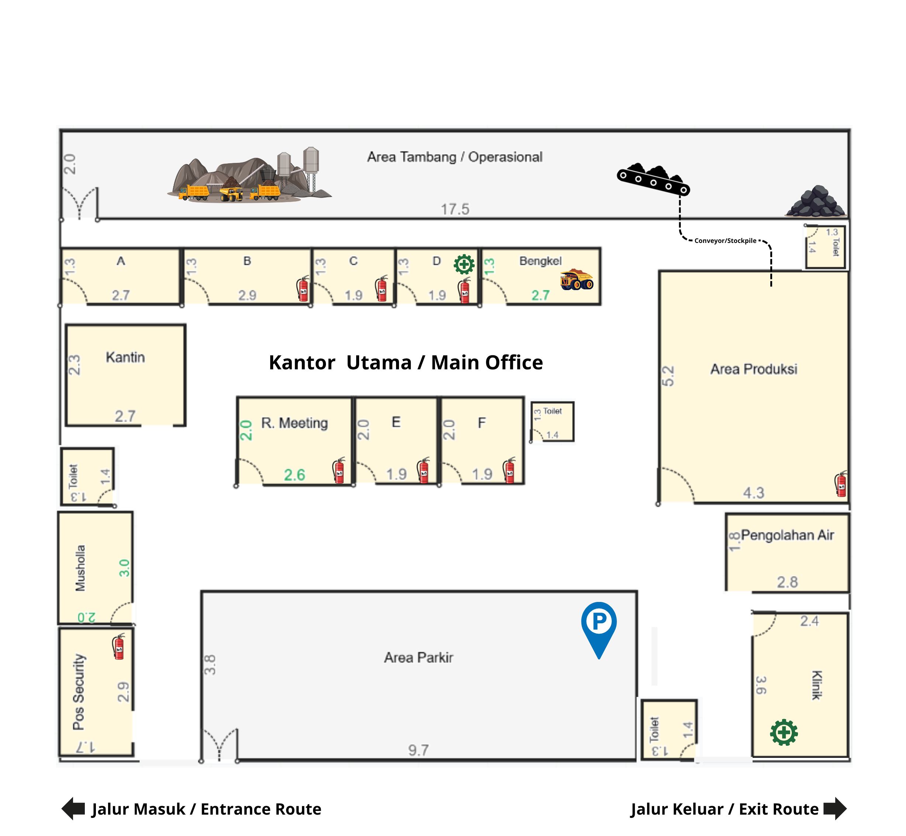

Keterangan Area
Identifikasi area penting dan fasilitas di dalam kompleks PT Bukit Asam Tbk.
Area pemeriksaan alat pelindung diri sebelum memasuki zona kerja.
Pusat kendali operasional untuk monitoring dan pengaturan sistem.
Tempat pengujian kualitas batubara hasil produksi.
Pusat koordinasi keselamatan kerja dan penanganan darurat.
Ruang teknis untuk perawatan dan pengelolaan sistem operasional.
Fasilitas tempat tinggal sementara bagi karyawan.
Analisis Potensi Bahaya Per Area
Identifikasi risiko berdasarkan denah PT Bukit Asam Tbk untuk pengendalian bahaya yang tepat sasaran.
Area Tambang / Operasional
- Kecelakaan alat berat (excavator, dump truck)
- Paparan debu batubara (PM10)
- Kebisingan tinggi alat berat
- Gas berbahaya dari proses tambang
Area Produksi & Conveyor
- Bahaya mesin conveyor (emergency stop wajib)
- Suhu lingkungan yang tinggi
- Debu batubara dari proses stockpile
Laboratorium (C)
- Bahan kimia berbahaya (reaktif, korosif)
- Paparan reagen uji kualitas batubara
- Tumpahan bahan kimia laboratorium
Bengkel Maintenance
- Percikan api las dan gerinda
- Alat tajam dan benda berputar
- Tumpahan bahan bakar dan oli mesin
Kantor Utama (E/F)
- Bahaya ergonomi (posisi duduk komputer)
- Stres kerja dan beban kerja berlebih
- Kebakaran instalasi listrik
Mess Karyawan (F)
- Penyakit menular antar penghuni
- Lingkungan kurang higienis
- Kontaminasi mikroorganisme pada fasilitas
Langkah Penanganan Darurat
Prosedur tanggap darurat sesuai protokol K3 PT Bukit Asam
Amankan Area Sekitar
Pastikan lokasi kejadian aman dari bahaya lanjutan seperti listrik, api, gas, atau alat berat yang bergerak.
Cek Kesadaran Korban
Panggil korban dengan lantang dan tepuk bahu untuk melihat respons. Jangan pindahkan korban jika dicurigai cedera tulang belakang.
Hubungi Tim Medis K3
Segera tekan tombol darurat atau hubungi ekstensi 112 dari pesawat telepon terdekat. HSE Room (D) siaga 24 jam.
Lakukan Pertolongan Pertama (P3K)
Berikan tindakan P3K sesuai prosedur simulasi hingga tim medis tiba. Gunakan kotak P3K yang tersedia di setiap area kerja.
Evakuasi ke Titik Kumpul
Pandu seluruh personil menuju salah satu dari 4 titik kumpul (Assembly Point) yang telah ditentukan pada denah.